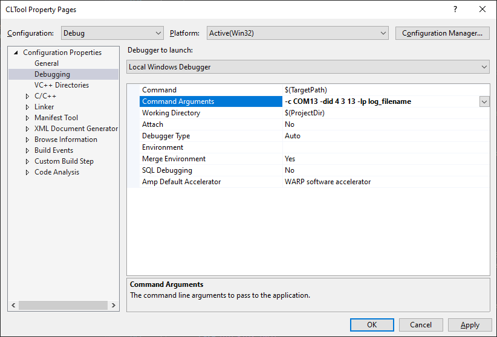

CLTool¶
Overview¶
The Inertial Sense CLTool is a command line utility that can be used to read and display data, update firmware, and log data from Inertial Sense products. Additionally, CLTool serves as example source code that demonstrates integration of the Inertial Sense SDK into your own source code. The CLTool can be compiled in Linux, Mac, Windows and embedded platforms.
Help Menu¶
# Command line utility for communicating, logging, and updating firmware with Inertial Sense product line.
EXAMPLES
cltool -c /dev/ttyS2 -did DID_INS_1 DID_GPS1_POS DID_PIMU # stream DID messages
cltool -c /dev/ttyS2 -did 4 13 3 # stream same as line above
cltool -c /dev/ttyS2 -did 3=5 # stream DID_PIMU at startupNavDtMs x 5
cltool -c /dev/ttyS2 -presetPPD # stream post processing data (PPD) with INS2
cltool -c /dev/ttyS2 -presetPPD -lon -lts=1 # stream PPD + INS2 data, logging, dir timestamp
cltool -c /dev/ttyS2 -edit DID_FLASH_CONFIG # edit DID_FLASH_CONFIG message
cltool -c /dev/ttyS2 -baud=115200 -did 5 13=10 # stream at 115200 bps, GPS streamed at 10x startupGPSDtMs
cltool -c * -baud=921600 # 921600 bps baudrate on all serial ports
cltool -rp logs/20170117_222549 # replay log files from a folder
cltool -c /dev/ttyS2 -rover=RTCM3:192.168.1.100:7777:mount:user:password # Connect to RTK NTRIP base
cltool -c /dev/ttyS2 -get 1,4,13,DID_GPS1_POS # Return specific DIDs
cltool -c /dev/ttyS2 -get "{DID_INS_1: {insStatus, theta}, DID_INS_2: {qn2b}}" # Return portion of two DIDs
cltool -c /dev/ttyS2 -set "{DID_FLASH_CONFIG: {gps1AntOffset[1]: 0.8}}" # Set one value in DID array
cltool -c /dev/ttyS2 -set "{DID_FLASH_CONFIG: {gps1AntOffset: [0.8, 0.0, 1.2]}}" # Set values in DID
EXAMPLES (Firmware Update)
cltool -c /dev/ttyS2 -ufpkg fw/IS-firmware.fpkg
cltool -c /dev/ttyS2 -uf fw/IS_IMX-5.hex -ub fw/IS_bootloader-STM32L4.hex -uv
OPTIONS (General)
-baud=BAUDRATE Set serial port baudrate. Options: 115200, 230400, 460800, 921600 (default)
-c DEVICE_PORT Select serial port. Set DEVICE_PORT to "*" for all ports or "*4" for only first four.
-dboc Send stop-broadcast command `$STPB` on close.
-h --help Display this help menu.
-list-devices Discovers and prints a list of discovered Inertial Sense devices and connected ports.
-lm Listen mode for ISB. Disables device verification (-vd) and does not send stop-broadcast command on start.
-magRecal[n] Recalibrate magnetometers: 0=multi-axis, 1=single-axis
-nmea=[s] Send NMEA message s with added checksum footer. Display rx messages. (`-nmea=ASCE,0,GxGGA,1`)
-nmea Listen mode for NMEA message without sending stop-broadcast command `$STPB` at start.
-q Quiet mode, no display.
-raw-out Outputs all data in a human-readable raw format (used for debugging/learning the ISB protocol).
-reset Issue software reset.
-s Scroll displayed messages to show history.
-stats Display statistics of data received.
-survey=[s],[d] Survey-in and store base position to refLla: s=[2=3D, 3=float, 4=fix], d=durationSec
-sysCmd=[c] Send DID_SYS_CMD c (see eSystemCommand) command then exit the program.
-vd Disable device validation. Use to keep port(s) open even if device response is not received.
-verbose[=n] Enable verbose event logging. Use optional '=n' to specify log level between 0 (errors only) and 99 (all events)
-v Print version information.
OPTIONS (Special)
-factoryReset Reset IMX flash config to factory defaults.
-romBootloader Reboot into ROM bootloader mode. Requires power cycle and reloading bootloader and firmware.
OPTIONS (Event)
-evf=[t],[po],[pr],[id] Sets which DID_EVENT's can be broadcast for debug purposes.
target: t=[0=device, 1=device's GNSS1 port, 2=device's GNSS2 port],
portMask: po=[0x80=currentPort, 0x08=USB port, 0x04=UART2, 0x02=UART1, 0x01=UART)],
priorityLevel: pr=[Priority ID's to be enabled. See:eEventPriority for protocol EV_ID values].
It is recommended to have a minimum level of 1 at all times to allow broadcast of critical errors.
msgTypeIdMask: id=[Protocol ID's to be enabled. Mask together protocol EV_ID value (0x01 << EV_ID).
See:eEventProtocol for protocol EV_ID values]. It is recommended to mask (0x01 << EVENT_MSG_TYPE_ID_ASCII)
at all times to allow broadcast of critical errors.
OPTIONS (Firmware Update)
-ufpkg FILEPATH Update firmware using firmware package file (.fpkg) at FILEPATH.
-uf FILEPATH Update app firmware using .hex file FILEPATH. Add -baud=115200 for systems w/ baud limits.
-ub FILEPATH Update bootloader using .bin file FILEPATH if version is old. Must be used with option -uf.
-fb Force bootloader update regardless of the version.
-uv Run verification after application firmware update.
OPTIONS (Messages)
-get <DID1>,<DID2>,... Return values of dataset(s). DID may be a name or number.
-get "{<DID>: {<FIELD1>,<FIELD2>,...}}" Return values of dataset(s). DID may be a name or number. YAML input format.
Examples: -get 1,4,12,DID_GPS1_POS
-get "{DID_INS_1,DID_GPS1_POS}"
-get "{DID_INS_1: {insStatus, theta}, DID_INS_2: {qn2b}}"
-set "{<DID>: {<FIELD1>: <VALUE>, ...}}" Set values of dataset(s). DID may be a number or name. YAML input format.
Examples: -set "{DID_FLASH_CONFIG: {gps1AntOffset: [0.8, 0.0, 1.2]}}"
-set "{DID_FLASH_CONFIG: {gps1AntOffset[2]: 1.2}}"
-set "{12: {ioConfig: 0x1a2b012c, ser2BaudRate: 921600}}"
-did [DID#<=PERIODMULT> DID#<=PERIODMULT> ...] Stream 1 or more datasets and display w/ compact view.
-edit [DID#<=PERIODMULT>] Stream and edit 1 dataset.
Each DID# can be the DID number or name and appended with <=PERIODMULT> to decrease message frequency.
Message period = source period x PERIODMULT. PERIODMULT is 1 if not specified.
Common DIDs: DID_INS_1, DID_INS_2, DID_INS_4, DID_PIMU, DID_IMU, DID_GPS1_POS,
DID_GPS2_RTK_CMP_REL, DID_BAROMETER, DID_MAGNETOMETER, DID_FLASH_CONFIG (see data_sets.h for complete list)
-dids Print list of all DID datasets
-persistent Save current streams as persistent messages enabled on startup
-presetPPD Send RMC preset to enable IMX post processing data (PPD) stream
-presetINS Send RMC preset to enable INS data stream
-presetGPXPPD Send RMC preset to enable GPX post processing data (PPD) stream
OPTIONS (Logging to file, disabled by default)
-lon Enable logging
-lt=TYPE Log type: raw (default), dat, sdat, kml or csv
-lp PATH Log data to path (default: ./IS_logs)
-lmb=MB File culling: Log drive usage limit in MB. (default: 0). `-lmb=0 -lms=0` disables file culling.
-lms=PERCENT File culling: Log drive space limit in percent of total drive, 0.0 to 1.0. (default: 0.5)
-lmf=BYTES Log max file size in bytes (default: 5242880)
-lts=0 Log sub folder, 0 or blank for none, 1 for timestamp, else use as is
-r Replay data log from default path
-rp PATH Replay data log from PATH
-rs=SPEED Replay data log at x SPEED. SPEED=0 runs as fast as possible.
OPTIONS (READ flash config) - DEPRECATED, use `-get` instead
-imxFlashCfg # List all "keys" and "values" in IMX
-gpxFlashCfg # List all "keys" and "values" in GPX
"-imxFlashCfg=[key]|[key]|[key]" # List specific IMX values
"-gpxFlashCfg=[key]|[key]|[key]" # List specific GPX values
OPTIONS (WRITE flash config) - DEPRECATED, use `-set` instead
"-imxFlashCfg=[key]=[value]|[key]=[value]" # Set key / value pairs in IMX flash config.
"-gpxFlashCfg=[key]=[value]|[key]=[value]" # Set key / value pairs in GPX flash config.
# Surround with "quotes" when using pipe operator.
EXAMPLES
cltool -c /dev/ttyS2 -imxFlashCfg # Read from device and print all keys and values
cltool -c /dev/ttyS2 "-imxFlashCfg=insOffset[1]=1.2|ser2BaudRate=115200" # Set multiple values
OPTIONS (RTK Rover / Base)
-rover=[type]:[IP or URL]:[port]:[mountpoint]:[username]:[password]
As a rover (client), receive RTK corrections. Examples:
-rover=TCP:RTCM3:192.168.1.100:7777:mountpoint:username:password (NTRIP)
-rover=TCP:RTCM3:192.168.1.100:7777
-rover=TCP:UBLOX:192.168.1.100:7777
-rover=SERIAL:RTCM3:/dev/ttyS2:57600 (port, baud rate)
-base=[IP]:[port] As a Base (sever), send RTK corrections. Examples:
-base=TCP::7777 (IP is optional)
-base=TCP:192.168.1.43:7777
-base=SERIAL:/dev/ttyS2:921600
Compile & Run (Linux/Mac)¶
- You must have cmake installed on your machine. To do this, download the cmake application at https://cmake.org/download/. Then, using the command line, you will need to install cmake with either of the following commands depending on your platform:
Mac: sudo "/Applications/CMake.app/Contents.bin/cmake-gui" --install Linux: sudo apt-get install cmake -
Create build directory
cd cltool mkdir build -
Run cmake from within build directory
cd build cmake .. -
Compile using make
make -
If necessary, add current user to the "dialout" group in order to read and write to the USB serial communication ports:
sudo usermod -a -G dialout $USER sudo usermod -a -G plugdev $USER (reboot computer) -
Run executable
cd build ./cltool
Compile & Run (Windows CMake CL)¶
-
Install CMake for Windows
-
Create build directory ```bash cd cltool mkdir build
-
Run cmake from within build directory
cd build cmake .. -
Compile
cmake --build . - Run executable
cd Release (or Debug depending on CMake configuration you selected) cltool.exe
Compile & Run (Windows CMake Visual Studio)¶
Windows Visual Studio supports CMake projects. Follow the instructions provided by Microsoft: https://learn.microsoft.com/en-us/cpp/build/cmake-projects-in-visual-studio?view=msvc-170
Updating Firmware with CLTool¶
Updating using Firmware Package¶
Updating firmware using a firmware package file provides a simple method to update multiple devices in one process. This include the ability to update an IMX-GPX module pair in one step. The cltool only needs know the file path of the firmware package file and the serial port of the device to be updated. The file extension for a firmware package is .fpkg.
NOTE: Updating the IMX firmware using a firmware package currently not supported and will become available in a future update.
cltool -c DEVICE_PORT -ufpkg FILEPATH
The following is a specific example of using a firmware package file:
cltool -c /dev/ttyACM0 -ufpkg IS-firmware_2.0.3_2024-03-18_213925.fpkg
Updating using Single Firmware File (Legacy Mode)¶
The CLTool can be used to update device firmware with the following options. This is the legacy firmware update methods that works only with the IMX-5 and earlier products (uINS-3, EVB-2, etc.).
cltool -c DEVICE_PORT -uf [FW_FILEPATH] -ub [BL_FILEPATH] -uv
| Options | Description |
|---|---|
-c DEVICE_PORT |
Specifies the device serial or USB port (i.e. /dev/ttyACM0). |
-uf [FW_FILEPATH] |
Specifies the application firmware file path. |
-ub [BL_FILEPATH] |
(Optional) Specified the bootloader firmware file. The bootloader is only updated if the version of the file provided is newer than the bootloader version currently on the device. |
-uv |
(Optional) Run verification after application firmware update. |
The following is a specific example:
cltool -c /dev/ttyS2 -uf fw/IS_IMX-5.hex -ub fw/IS_bootloader-STM32L4.hex -uv
Note: The firmware can only be updated at the following baud rates: 300000, 921600, 460800, 230400, 115200
Logging with CLTool¶
The CLTool can be used to log data to file with the following options:
cltool -c DEVICE_PORT -lon -lt=LOG_TYPE -lp DIRECTORY
| Options | Description |
|---|---|
-lon |
Enable logging. |
-lt=LOG_TYPE |
Specifies the log file type to be written. LOG_TYPE can be raw, dat, or csv. |
-lp DIRECTORY |
(Optional) Specifies the path where log files will be written. When not specified, the default location will be the current working directory. |
Log File Types¶
Log Type¶
| Log Type | Description |
|---|---|
raw |
Binary file containing byte for byte data received over the serial ports. All packets remain in their native form. Used for logging InertialSense binary (ISB), NMEA, RTCM3, uBlox UBX binary and SPARTN, and any other packet formats. Recommended for logging all data formats and post processing. |
dat |
Binary file containing InertialSense binary (ISB) DID data sets in "chunk" groups containing data in serial order as they appear over the serial port. Default file format. Recommended for post processing. |
csv |
Comma-Separated Values - Plain text file that uses specific structuring to arrange tabular data. Its basic format involves separating each data field (or cell in a table) with a comma and each record (or row) is on a new line. This simple format allows for ease in data import and export between programs that handle tabular data, such as databases and spreadsheets. |
The following is an example of enabling the logger with type raw and specifying the output directory:
./cltool -c /dev/ttyACM0 -lon -lt=raw -lp /media/usbdrive/data
Command Line Options¶
Navigate to the directory /cpp/SDK/cltool/build and run the CLTool with the help option, "-h"
./cltool -h
to display the command line options
Command Line Options in MS Visual Studio¶
When using MS Visual Studio IDE, command line arguments can be supplied by right clicking the project in the solution explorer and then selecting Configuration Properties -> Debugging -> Command Arguments (see image below).
